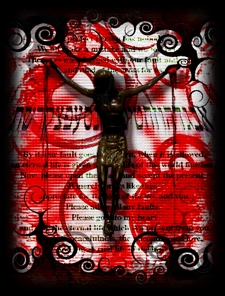

■tｈｅ_Ｐａｓｓｉｏｎ■

作者：歪魅
この世の罪全てを背負い、十字架に架けられ死を受けることで
罪深き我々人の過ちを赦し、無償の愛と永久の命をお与え下さった
我等が主、イエス様の御誕生日を祝う日。
・・・・・・こう物々しく書くとキリスト教も仏教も某サリン製造した宗教も
言ってるコトには大差ないとか思ってしまう私は罰当たりでせうか？
でも、映画『俺たちは天使じゃない』の中に出てきた宗教の定義は好きです。
ビデオだったら、みなみ野のツタヤにもあるんで是非借りて見て下さい！むしろ見
ろ！！
脱獄犯が神父に間違われて教会で暮らすハメになるコメディータッチ(?)の物語で
す。
ロバートデニーロ＆ショーペン主演の、古い洋画です。
泣けます！笑えます！そし
て考えさせられます。
ストーリーも、舞台となる田舎街の雰囲気も、メッセージ性も、緩やかなテンポ
も、
何を取っても素晴らしいですvV
自分の作品と全然関係ないコメントですが(笑)
<< Close >>